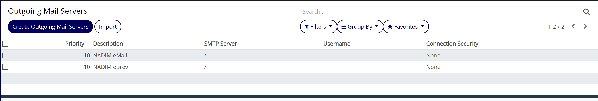
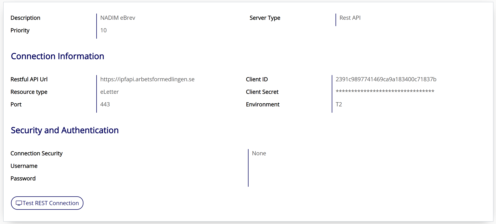
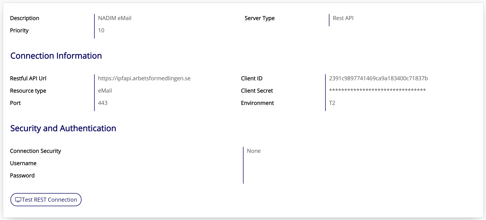

NADIM Send Mail
NADIM is a messaging system that replaces the normal outgoing SMTP server for outgoing messages. This module use RestAPI to send messages between Odoo
server and Nadim integration server. NADIM's primary focus is for sending E-brev (elettermessages) to digital mailboxes or snail mail via
PostNord Strålfors. However, it is also used to send eMail (emailmessages) and SMS (smsmessages).
More detailed flow documentation is available at
NADIM confluence page.
and API information at
IPF/Mulesoft.
Table of contents
These setting are for TEST environment. Please confirm parameters for production.
A pre configured file ir.mail_server.csv can be found in the data folder. Also make sure that it is included in the manifest file.
The following servers should be present in Technical > Outgoing Mail Servers.

Manually add Client Secret. The client secret can be found at
IPF/Mulesoft.
- Go to Technical > Outgoing Mail Servers, click on a server and Edit Outgoing Mail Servers:
- Set the Client Secret field
- Click Save Outgoing Mail Servers
- Repeat step 1 for all the servers in the list.
Go to Technical > Outgoing Mail Servers and Create Outgoing Mail Servers:
- For Ebrev set the following parameters
- Description - NADIM eBrev
- Server Type - Rest API
- Priority - 10
- Restful API Url - https://ipfapi.arbetsformedlingen.se
- Resource type - eLetter
- Port - Set according to environment (Default 443=T2)
- Client ID - 2391c9897741469ca9a183400c71837b (DAFA)
- Client Secret - Found at
IPF/Mulesoft.
- Environment - Set according to environment (Default T2=ACC)

- For Email set the following parameters
- Description - NADIM eBrev
- Server Type - Rest API
- Priority - 10
- Restful API Url - https://ipfapi.arbetsformedlingen.se
- Resource type - eMail
- Port - Set according to environment (Default 443=T2)
- Client ID - 2391c9897741469ca9a183400c71837b (DAFA)
- Client Secret - Found at IPF/Mulesoft.
- Environment - Set according to environment (Default T2=ACC)

- Set respective NADIM server as default outgoing server for eMail and eBrev templates:
- Note book > Avancerade inställningar > Utgående e-postserver > NADIM ...
That's it.
Versions:
V12.0.1.0.2
V12.0.1.0.1
V12.0.1.0.0